10 分钟掌握所有命令
很多人用 Claude Code 只是当聊天工具，白白浪费了它 90% 的能力。本文提供保姆级教程，让你 10 分钟掌握所有核心命令！
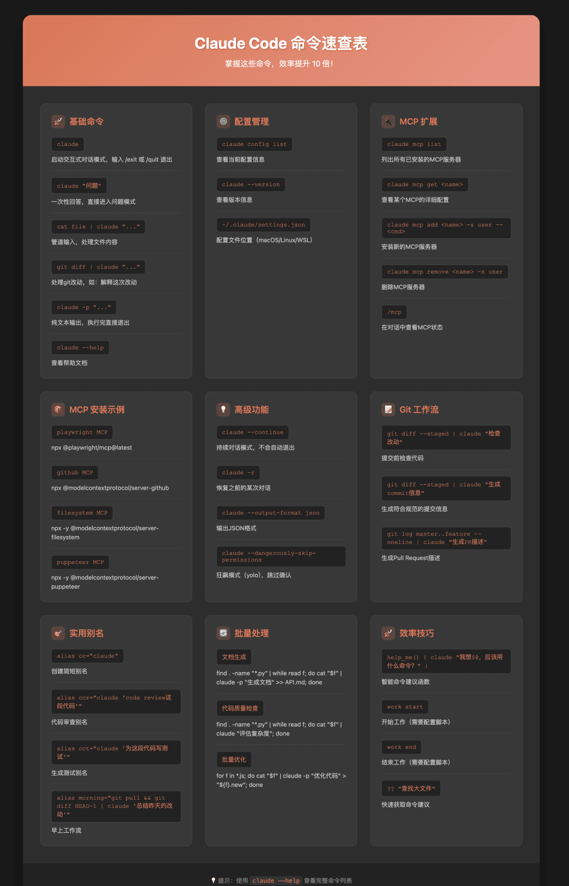
📖 在线参考
可以收藏这个页面作为命令参考：https://cc-cli-help.pages.dev
1️⃣ 基础命令 - 5分钟上手
先从最简单的开始，这5个命令能满足你80%的需求。
1.1 claude - 启动交互模式
最基础但最常用的命令：
claude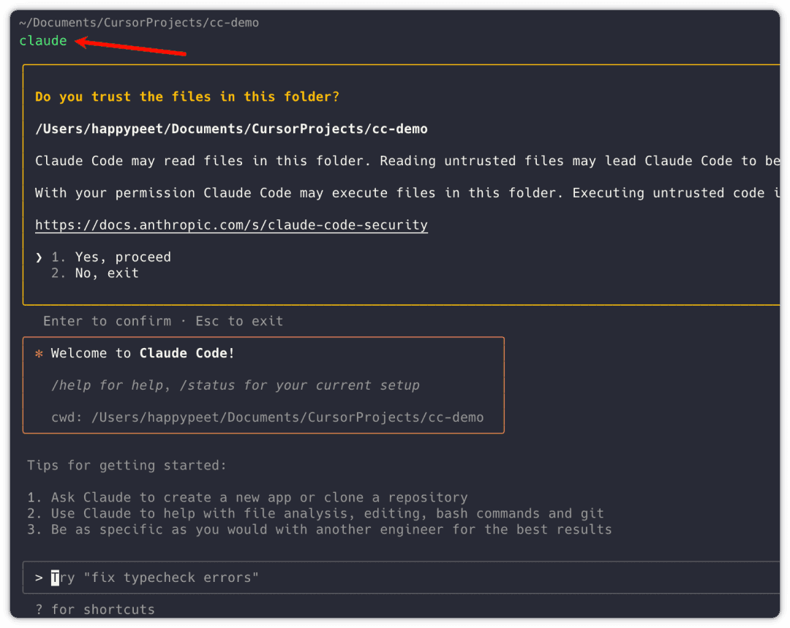
就这么简单，敲完回车就进入对话模式了。想退出？输入 /exit 或 /quit 就可以了。
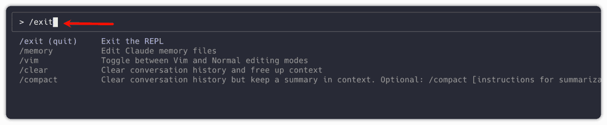
1.2 claude "问题" - 一次性回答
不想进入交互模式？直接问：
claude "这段代码有什么问题"
claude "帮我写个快速排序"直接就进入问题模式：
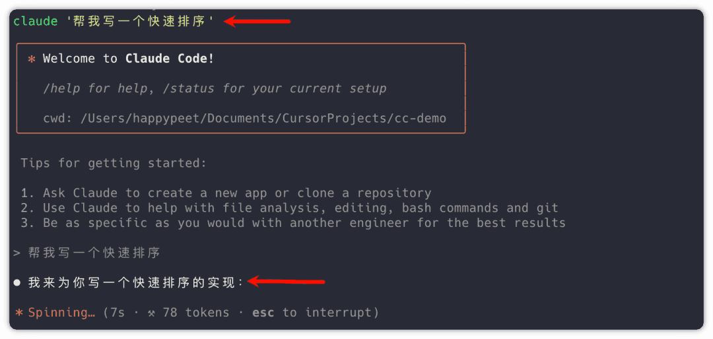
写完以后还可以继续在命令行输入问题：
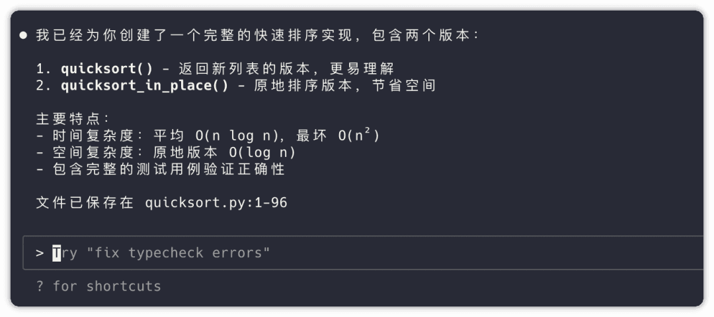
1.3 管道处理 - 这个功能绝了
这是最实用的功能，可以直接处理文件内容：
# 优化代码文件
cat quicksort.py | claude "优化这段代码"
# 翻译文档
cat README.md | claude "翻译成中文"直接就可以开始优化代码了：
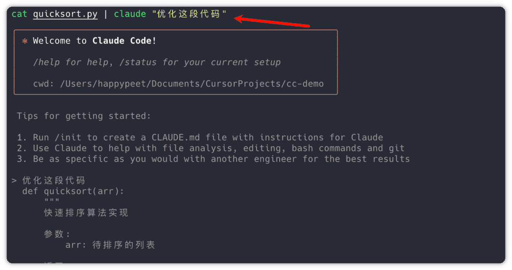
甚至可以这样玩：
git diff | claude "解释这次改动"看到结果没有，不用自己傻乎乎看密密麻麻的代码，一次性帮你总结好：
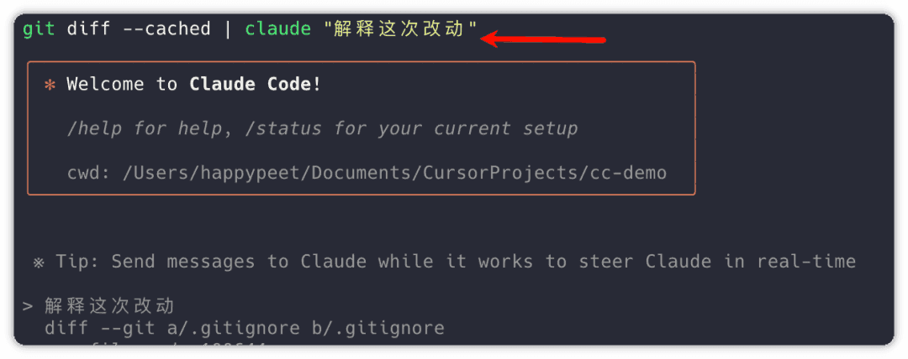
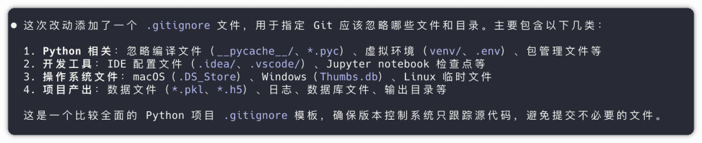
1.4 claude -p - 输出结果
默认输出会有 Markdown 格式，加上 -p 就是纯文本，并且执行完后会直接退出：
claude -p "生成MySQL的SQL的JOIN语句案例" > query.sql可以看到，上面的命令执行完后，就直接退出了。没有交互的地方。并且输出内容：
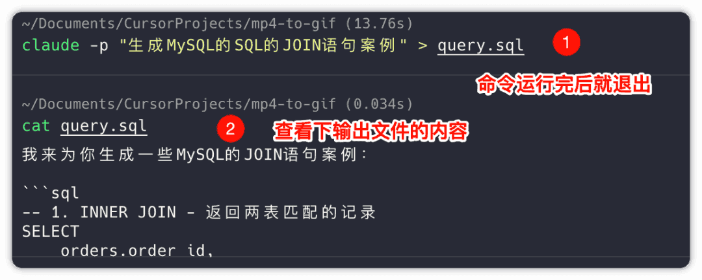
1.5 claude --help - 查看帮助
忘记命令了？一个 help 搞定：
claude --help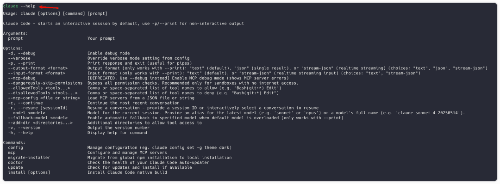
2️⃣ 配置管理 - 个性化你的Claude
2.1 查看当前配置
会显示当前使用的模型、API密钥等信息：
claude config list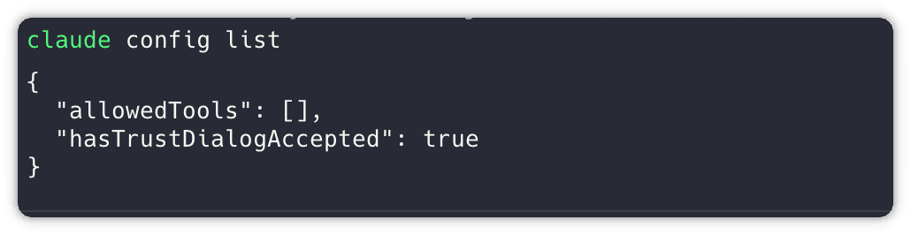
2.2 修改配置
# 设置默认模型
claude config set model claude-3-sonnet
# 设置最大tokens
claude config set max-tokens 4000
# 设置温度参数
claude config set temperature 0.72.3 重置配置
claude config reset3️⃣ MCP命令 - 让Claude Code开挂
MCP (Model Context Protocol) 是 Claude Code 的杀手锏，能连接各种外部工具。
3.1 查看MCP列表
claude mcp list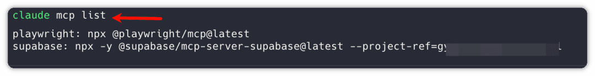
3.2 查看某个MCP的详细配置
claude mcp get playwright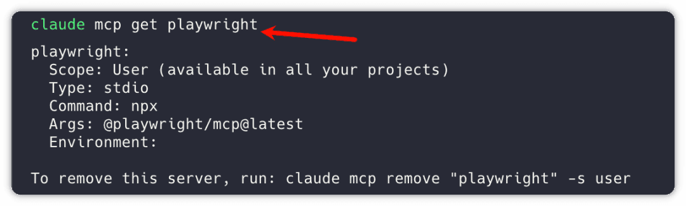
3.3 删除某个MCP
claude mcp remove "playwright" -s user3.4 查看MCP状态
在交互模式中使用：
/mcp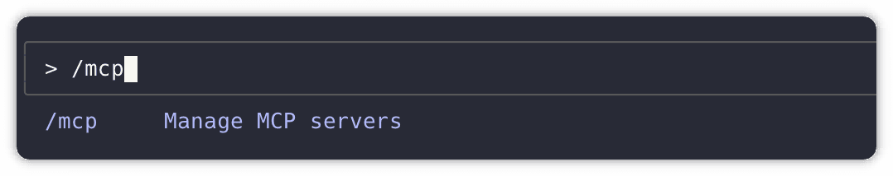
就会显示 MCP 的状态：
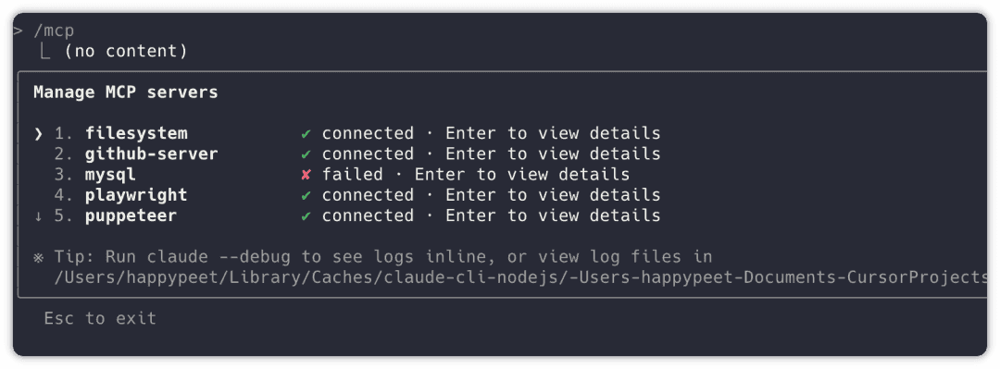
3.5 安装MCP
安装 Playwright
claude mcp add playwright -s user -- npx @playwright/mcp@latest其他常用MCP安装
# Sequential Thinking
claude mcp add sequential-thinking -s user -- npx -y @modelcontextprotocol/server-sequential-thinking
# 文件系统
claude mcp add filesystem -s user -- npx -y @modelcontextprotocol/server-filesystem ~/Documents ~/Desktop ~/Downloads
# Puppeteer
claude mcp add puppeteer -s user -- npx -y @modelcontextprotocol/server-puppeteer
# Firecrawl (需要替换为实际的API Key)
claude mcp add firecrawl -s user -e FIRECRAWL_API_KEY=fc-YOUR_API_KEY -- npx -y firecrawl-mcp4️⃣ 实战案例 - 连接GitHub
4.1 安装GitHub MCP
claude mcp add github-server -e GITHUB_PERSONAL_ACCESS_TOKEN=YOUR_TOKEN -- npx "@modelcontextprotocol/server-github"⚠️ 注意：分配 token 的时候，要给适当的权限：
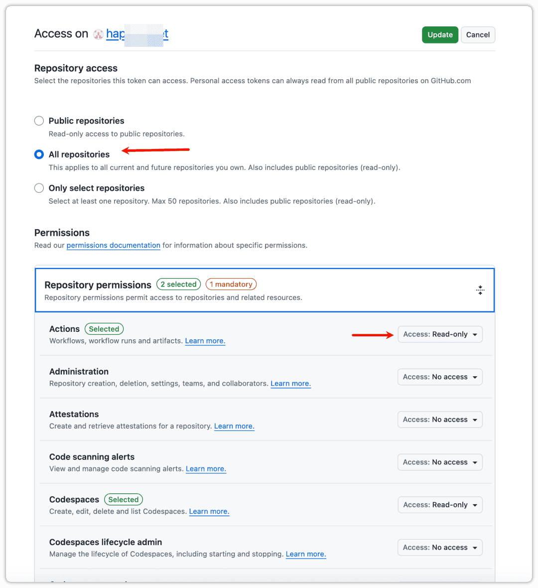
不然就会报错：
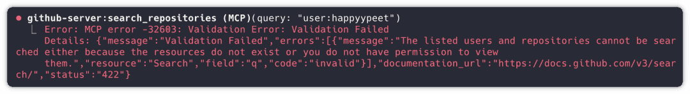
4.2 使用GitHub MCP
安装完成后，可以直接询问：
我的github仓库有哪些项目很精准的列举了仓库里的项目，并且还有中文解释和备注：
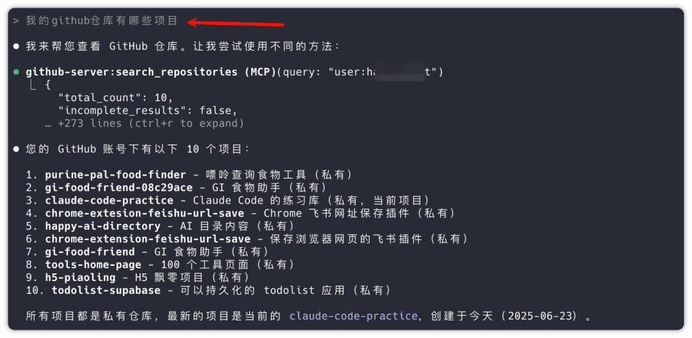
github的gi-food-friend这个项目最近的提交有哪些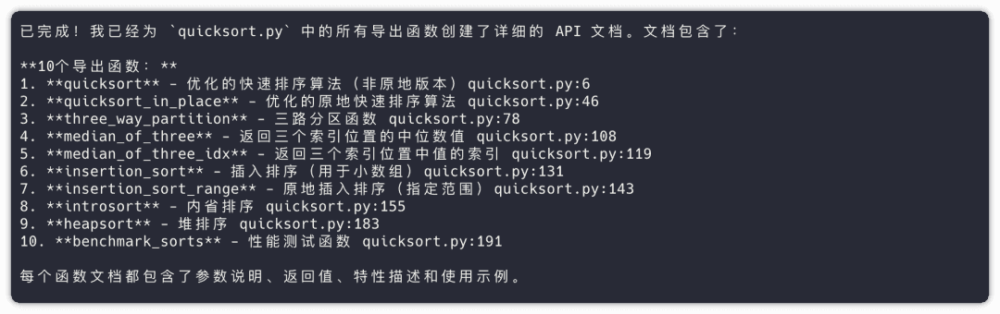
可以看到很详细的提交信息，包括：
- 提交时间
- 提交者
- 提交信息
- 文件变更统计
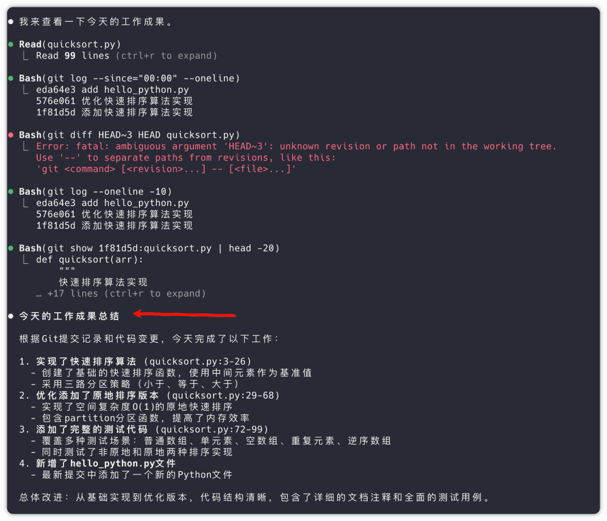
5️⃣ 高级命令和技巧
5.1 会话管理
# 继续上次会话
claude --continue
# 从历史会话中选择
claude --resume
# 在非交互模式下继续
claude --continue --print "继续之前的任务"5.2 输出格式控制
# JSON 格式输出
claude --output-format json "分析这个错误"
# 流式 JSON 输出
claude --output-format stream-json "处理大文件"
# 纯文本输出（默认）
claude --output-format text "生成代码"5.3 项目特定配置
# 在项目目录中设置
claude config set --project model claude-sonnet-3.5
# 查看项目配置
claude config list --project5.4 批处理和自动化
# 批处理多个文件
for file in *.py; do
cat "$file" | claude "检查这个Python文件的代码质量" > "${file%.py}_review.txt"
done
# 管道链式处理
git diff | claude "总结改动" | claude "用中文解释"6️⃣ 交互模式的特殊命令
在 claude 交互模式中，还有一些特殊的斜杠命令：
/help # 显示帮助信息
/exit, /quit # 退出交互模式
/clear # 清空当前对话历史
/mcp # 查看MCP状态
/continue # 继续之前的对话
/reset # 重置会话状态7️⃣ 常见问题和解决方案
7.1 连接问题
# 测试API连接
claude "test connection"
# 检查配置
claude config get api-key
claude config get model7.2 性能优化
# 启用缓存
claude config set cache-enabled true
# 设置并发限制
claude config set max-concurrent 3
# 调整超时时间
claude config set timeout 307.3 调试模式
# 启用详细日志
claude --verbose "你的问题"
# 调试模式
claude --debug "测试命令"8️⃣ 最佳实践建议
- 合理使用管道：善用
|将其他命令的输出传给 Claude 处理 - 配置MCP扩展：根据需要安装相应的MCP来扩展功能
- 保存配置：为不同项目设置专门的配置文件
- 批处理自动化：将 Claude Code 集成到脚本中处理重复任务
- 合理分段：对于长文本，分段处理效果更好
9️⃣ 命令速查表
| 命令 | 功能 | 示例 |
|---|---|---|
claude | 启动交互模式 | claude |
claude "问题" | 一次性询问 | claude "解释这段代码" |
claude -p | 纯文本输出 | claude -p "生成SQL" > query.sql |
claude --help | 查看帮助 | claude --help |
claude config list | 查看配置 | claude config list |
claude mcp list | 查看MCP列表 | claude mcp list |
claude mcp add | 安装MCP | claude mcp add playwright -s user |
claude --continue | 继续会话 | claude --continue |
claude --resume | 选择历史会话 | claude --resume |
🔟 总结
通过这10分钟的学习，你已经掌握了 Claude Code 的所有核心命令：
- 基础命令：交互模式、一次性询问、管道处理
- 配置管理：个性化设置、项目配置
- MCP扩展：连接外部工具，扩展功能
- 高级技巧：会话管理、输出控制、自动化处理
现在你可以充分发挥 Claude Code 的强大功能，而不仅仅是把它当作聊天工具使用了！
💡 建议：将这份指南保存为书签，在使用过程中随时查阅。随着使用经验的积累，你会发现更多有趣的玩法！